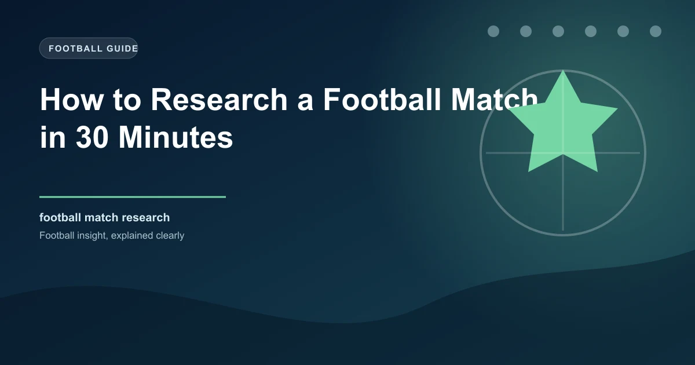

How to Research a Football Match in 30 Minutes

Most bettors either over-research (spending hours on a single match) or under-research (betting on a gut feeling). Neither approach is optimal. The goal is a consistent, systematic 30-minute research framework that covers all the high-value signals without wasting time. This guide gives you exactly that process — the same framework used by professional analysts.
The 30-Minute Research Framework
- Open Flashscore — check the match page for confirmed lineups
- Identify: key absentees (injured players, suspended players)
- Check: are the best players available? Who is missing?
- Formation: check expected lineup shape vs their typical setup
- If no confirmed lineups: check team news from BBC Sport or the club's social media
- Check last 5 matches for each team on SofaScore
- Note: Are they winning, drawing, or losing?
- Look at goals scored and conceded in those 5 matches — trend matters
- Home form vs Away form — separate the two
- Look for a winning/losing streak — momentum is real
- Check last 5 H2H meetings on Flashscore
- Note: Are there consistent patterns? (e.g., always Under 2.5, always BTTS Yes)
- Consider: Is this a derby/rivalry? H2H data matters more in those games
- Also note: home team winning H2H trends — but don't over-weight old meetings
- On SofaScore: check xG, shots on target, and possession for last 5 matches
- Is xG higher than actual goals scored? Possible underperformance = future value
- Check Over/2.5 percentage in last 5 matches for both teams
- Check BTTS percentage in last 5 matches
- Open Oddschecker — compare the 1X2 and key market odds
- Check if Bet365 or Pinnacle have significantly better odds
- Note: if your predicted odds differ from the bookmaker's by >10%, there's likely value
- Synthesize: do the signals point one direction?
- If Yes — bet. If No — skip the match.
- Stick to 1–2 markets maximum. Don't bet on every market.
- Apply your bankroll management rules
The 3-Signal Rule
Your research is complete when at least 3 independent signals point in the same direction. One signal is a maybe. Three signals is a bet. Examples of independent signals: Team news improvement, winning streak, H2H pattern, home form dominance. Each one reinforces the case — don't bet on one signal alone.
Pro Tip: Skip Matches That Fail the Quick Check
If after 10 minutes of research you can't form a clear opinion — skip the match. Forcing a bet because you've already researched it leads to poor decisions. The best bettors say no to most matches. Pinnacle's research shows professional bettors bet on fewer than 10% of available matches.
Tools for Fast Research
| Tool | Use | Time Saved |
|---|---|---|
| Flashscore | Lineups, results, H2H | Major |
| SofaScore | Stats, xG, cards, formations | Major |
| Oddschecker | Odds comparison | Moderate |
| Transfermarkt | Injury/suspension lists | Moderate |
| BBC Sport | Team news, pre-match quotes | Moderate |
The Bottom Line
A 30-minute systematic research routine beats both impulse betting and obsessive over-researching. Use the time-block framework above — 5 minutes per section, focused tools, and the 3-signal rule to make decisions. Discipline in research is the foundation of every winning bettor's process.
Start Researching Smarter
Use WinFulltime's predictions as your starting point, then apply the 30-minute research framework above.
View Today's Predictions →